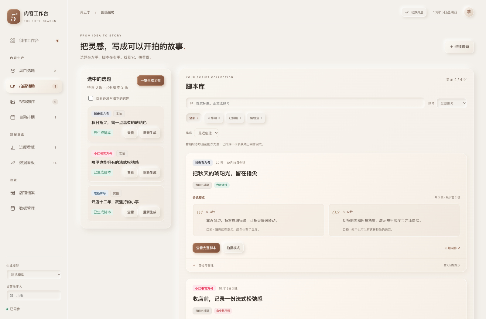
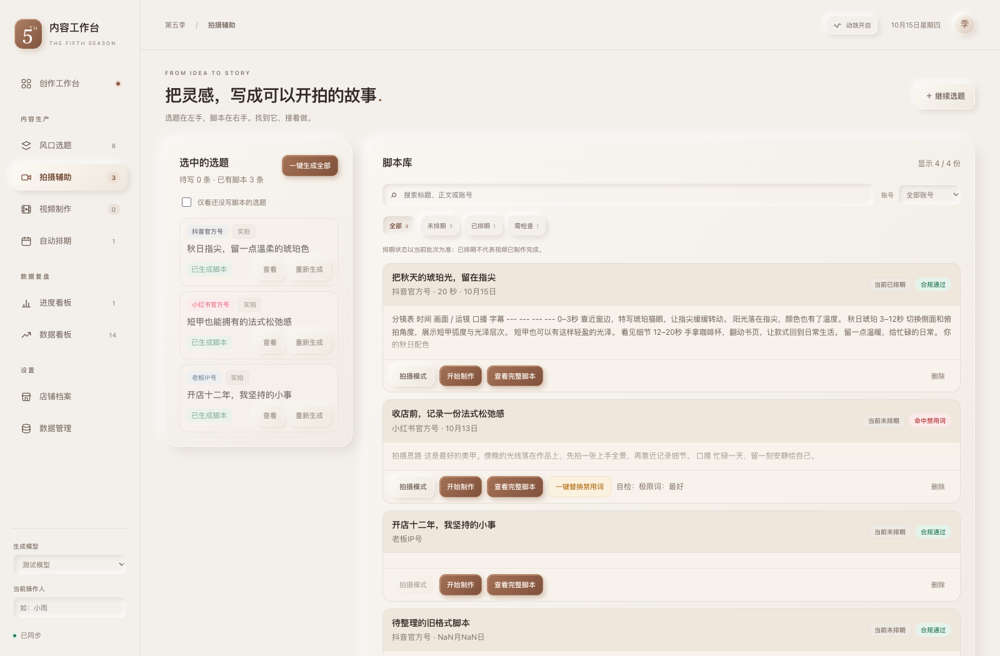
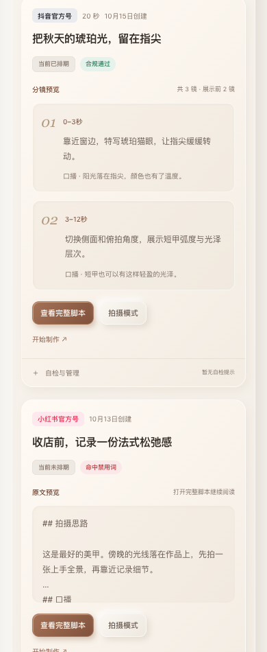

先看见画面，再开始拍摄。
分镜拆成可扫读的预览，常用操作放在一起。支持创建时间与标题排序，筛选无结果时可一键恢复。
以下为同一组隔离示例数据的实际浏览器截图，不连接云端。



预览不改写脚本。表格无法可靠识别时保留原文；自检修正和删除仍需原有确认。
分镜拆成可扫读的预览，常用操作放在一起。支持创建时间与标题排序，筛选无结果时可一键恢复。
以下为同一组隔离示例数据的实际浏览器截图，不连接云端。



预览不改写脚本。表格无法可靠识别时保留原文；自检修正和删除仍需原有确认。